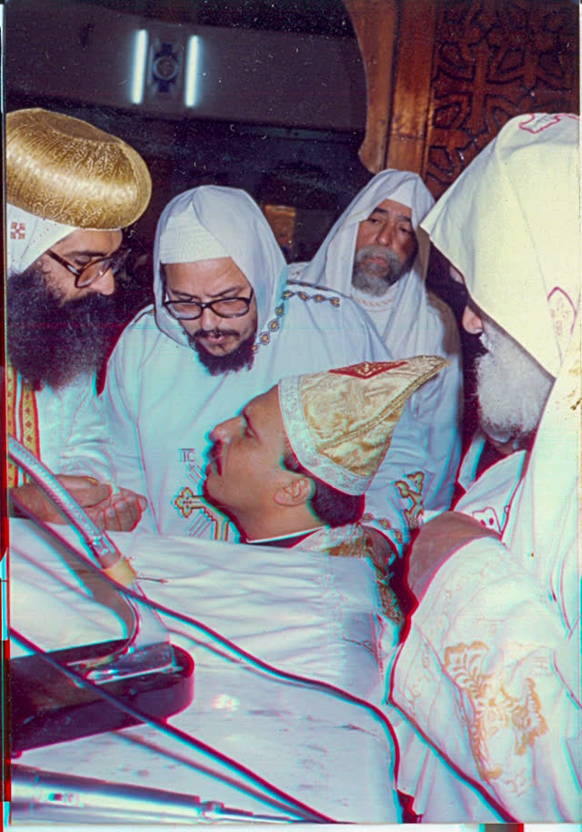
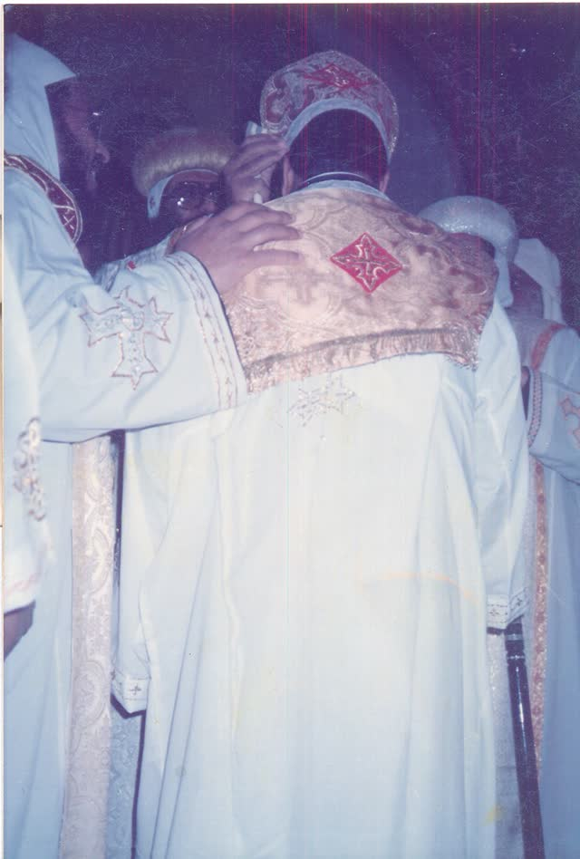
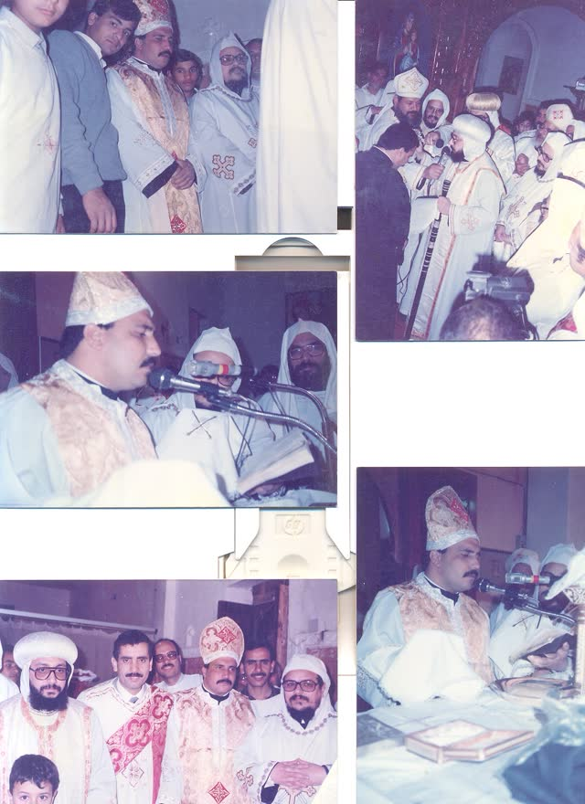
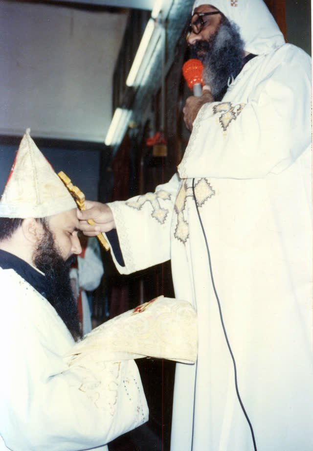

الرعاية الروحية
الخدمة الكهنوتية والرعاية والافتقاد والتربية والخدمة اليومية.

من مواليد طنطا عام 1956 إلى قمص كنيسة السيدة العذراء مريم بديرمواس: رحلة أب كاهن عبر أكثر من ثلاثة عقود من الخدمة والرعاية والمسؤولية، يرويها سيرته ومحطاته وشهادات من عاصروه.
وُلد القمص ويصا صبحي تادرس في 4 ديسمبر 1956 في طنطا، وحصل على بكالوريوس التجارة من جامعة طنطا عام 1980. ارتبط بديرمواس منذ عام 1988، ثم سُيم كاهنًا في 11 فبراير 1991 بيد الأنبا أغابيوس والأنبا توماس.
قضى فترة روحية عقب السيامة بدير السيدة العذراء بالمحرق، ثم بدأ خدمته الكهنوتية في إيبارشية ديرمواس ودلجا، ورُفع إلى رتبة القمصية في 22 يونيو 1997.
الاسم العلماني: سمير صبحي. تاريخ الميلاد: 4 ديسمبر 1956. مكان الميلاد: طنطا، محافظة الغربية.
أتم تعليمه الثانوي في طنطا (تشير الإفادة العائلية إلى عام 1975، والسنة الدقيقة قيد التوثيق بمستند رسمي)، ثم حصل على بكالوريوس التجارة من جامعة طنطا عام 1980، وارتبط قبل السيامة بالخدمة والتربية الكنسية والافتقاد والخلوات.
في 11 فبراير 1991 تمت سيامته كاهنًا بيد الأنبا أغابيوس والأنبا توماس. أعقبت السيامة فترة روحية بدير السيدة العذراء بالمحرق، ثم بدأ خدمته الكهنوتية في مارس 1991.
امتدت مسيرته الكهنوتية منذ 1991 عبر الرعاية الروحية والخدمة الكنسية والعمل الإداري والتوثيق والتواصل العام، بحسب السجلات الحالية للأرشيف.
المسيرة بحسب ما وُثق، وما تنسبه الأسرة إليها يُذكر منسوبًا
ولادة سمير صبحي في منطقة الحكمة بطنطا.
تخرج في كلية التجارة بجامعة طنطا.
انتقل ليخدم مع معلمه الأنبا أغابيوس تمهيدًا للرسامة (إفادة الأسرة). وفي العام نفسه سيم الأنبا أغابيوس أسقفًا للإيبارشية.
رُسم كاهنًا باسم القس ويصا صبحي بوضع يد الأنبا أغابيوس والأنبا توماس مطران القوصية.
عقب أربعين يومًا في الدير.
عاد من المحرق وبدأ خدمته في ديرمواس ودلجا.
تنسب صدى البلد (2026) إلى خدمته تأسيس مكتب التوثيق والزواج بالمطرانية.
رُقي إلى رتبة القمص. ويبدأ منها تاريخ الوكالة بحسب إفادة الأسرة.
أُقيم في كاتدرائية الملاك ميخائيل بطنطا بحضور محبيه وآباء إيبارشية طنطا.
وفي 5 فبراير 2025 تنتهي وكالة المطرانية بحسب إفادة الأسرة.
أسقفًا لإيبارشية ديرمواس ودلجا.
احتفلت مطرانية ديرمواس بمرور 35 عامًا على سيامته (صدى البلد، 8 أبريل 2026).
الخدمة الكهنوتية والرعاية والافتقاد والتربية والخدمة اليومية.
مسؤوليات كنسية وإدارية امتدت عبر سنوات خدمته في الإيبارشية.
حضور مرتبط بالتوثيق والزواج والأحوال الشخصية الكنسية.
حضور في مناسبات الإيبارشية وخدمتها.
تُنسب الصور إلى المناسبات بحسب تنظيم الأسرة لمجلدات أرشيفها.




تشكّل علاقة القمص ويصا بالأنبا أغابيوس محورًا مهمًا في الأرشيف، من الارتباط بديرمواس إلى السيامة ومسيرة الخدمة الممتدة حتى 2025.
احتفلت مطرانية ديرمواس بالذكرى في أبريل 2026.